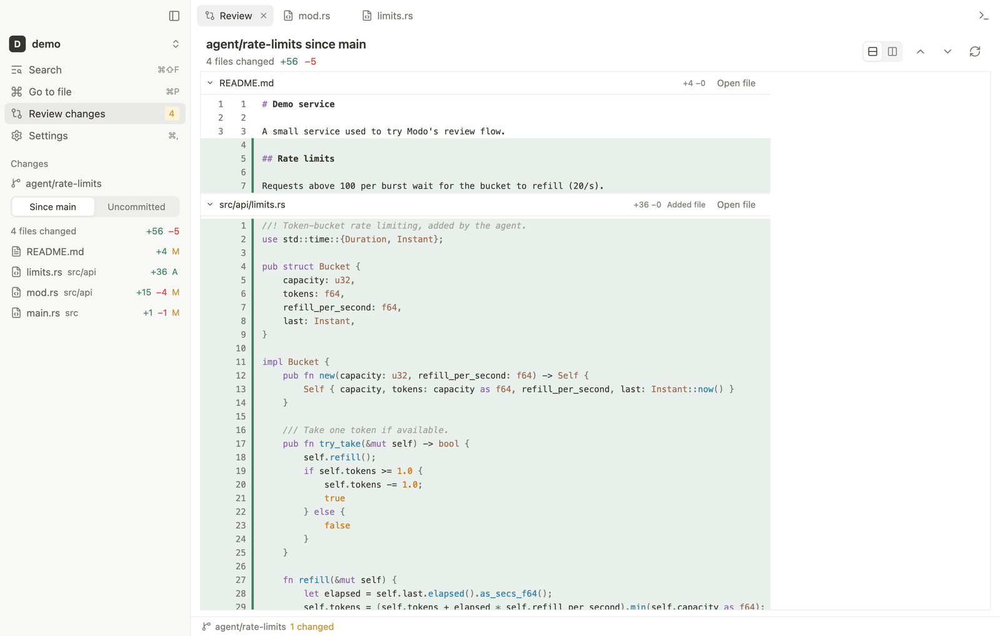
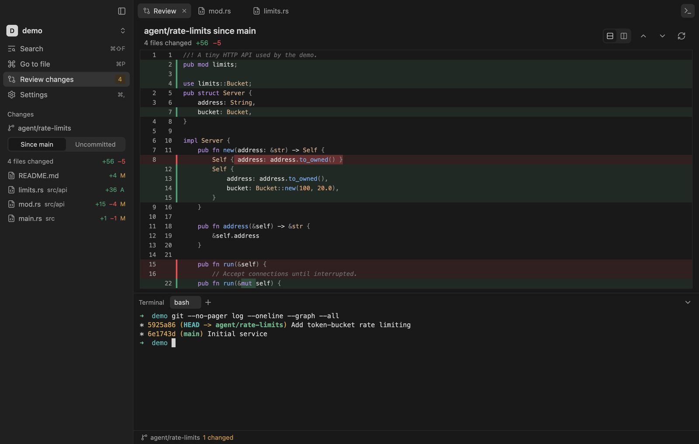
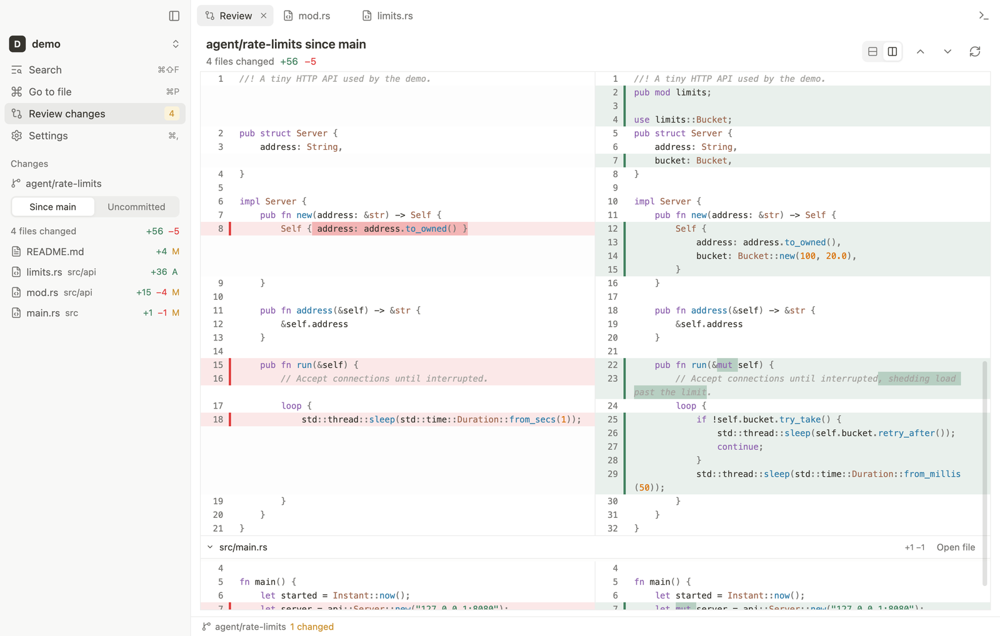
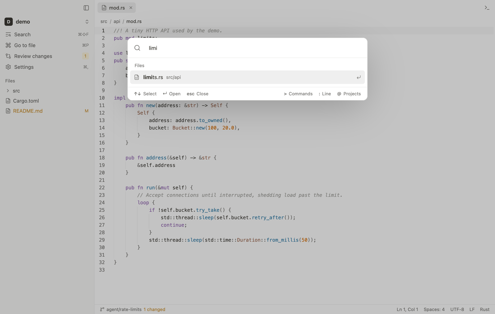
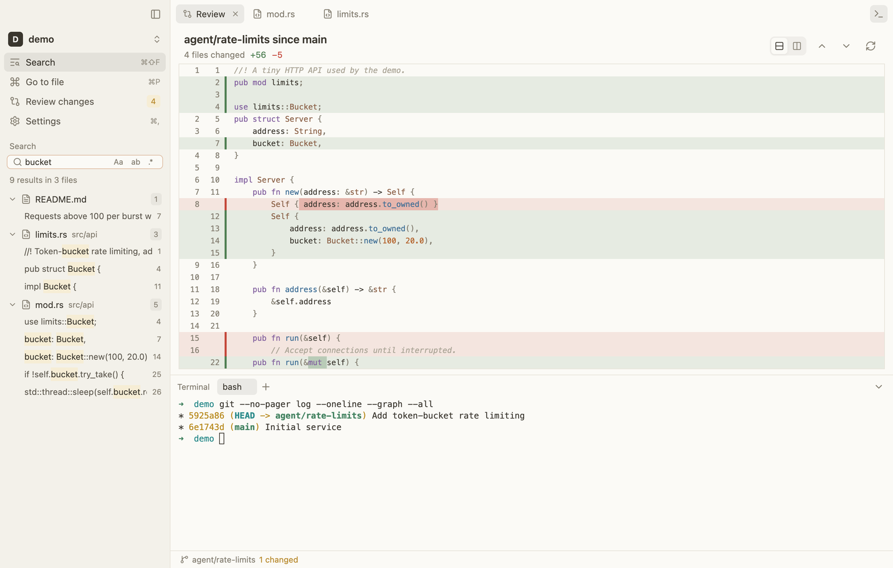

Review the code your agents wrote.
Modo is a fast, quiet desktop app for reading, reviewing, and editing agent-written code. Native, no extensions, no language servers, no background indexer.




What it does
Everything after the agent finishes.
Agents write most of the code now. What you need afterwards is a place to see what changed, read it comfortably, fix a line, and run a command.
Review agent work
One scrollable diff of everything a branch changed since main, or any branch you pick. Unified or side by side, with word-level changes marked.
Read and edit
Tree-sitter highlighting for over 25 languages, find and replace, multiple cursors, and saves that never overwrite changes made on disk.
Follow along live
Files, the tree, and the review refresh on their own while an agent edits. Switch between git worktrees in one click.
Find anything
Fuzzy file search, project-wide search on ripgrep's engine, and a command palette for everything else.
Run commands
A real terminal with tabs and true color, in the shell you choose: zsh, bash, fish, PowerShell, Git Bash, WSL, or your own.
Looks calm
Light, Dark, Paper, and Graphite themes, inspired by Notion. Markdown preview with Mermaid diagrams included.
Review
See the whole branch at once.
Compare with main, any local or remote branch, or only your uncommitted work. Switch to split view when you need to see both sides.
- Word-level changes, syntax highlighted
- Virtualized, so thousands of files stay smooth
- Jump to any file, or double-click a line to edit it

Navigate
Keyboard first, instantly.
Go to a file, search the project, jump to a line, or switch projects without leaving the keyboard. Modo opens in a blink because there is nothing to index.

Themes
Calm by default.
Warm neutrals, quiet chrome, and soft hover fills. Pick Light, Dark, Paper, or Graphite in Settings.

Install
Download Modo
Pick your platform. All builds are on the Releases page.
macOS
.dmg · universal
macOS 12+. Drag Modo to Applications, then see the first-launch note below.
DownloadWindows
-setup.exe
Windows 10+. Installs for your user and adds “Open with Modo”. If SmartScreen appears, choose More info, then Run anyway.
DownloadModo is not notarized by Apple, so macOS blocks the first launch. Open it once, then go to System Settings > Privacy & Security and click Open Anyway. Or run this once:
xattr -dr com.apple.quarantine /Applications/Modo.app
You need Rust and Git (macOS or Linux):
git clone https://github.com/yesabhishek/modo.git && cd modo scripts/install.sh
Use it
Open a folder. Press one key.
Open a project from a terminal, or drop a folder on the app, then review what your agent did.
modo .
Quiet tools for loud agents.
Free, open source, and about 9,500 lines of Rust on GPUI.